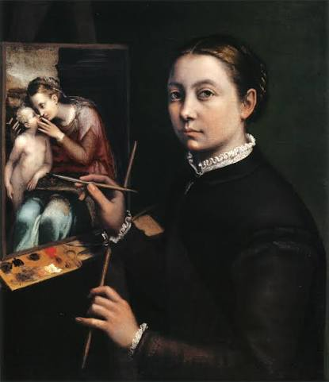
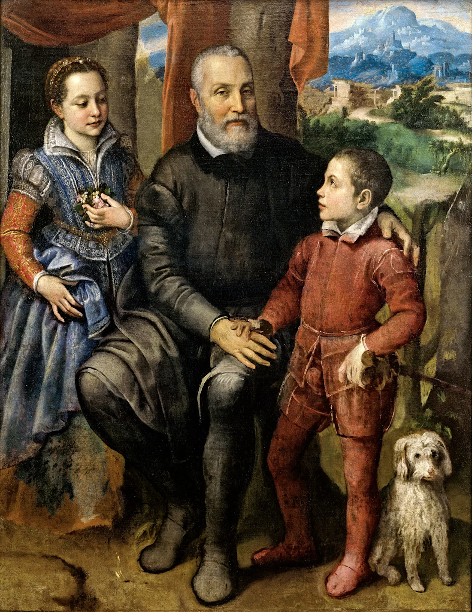
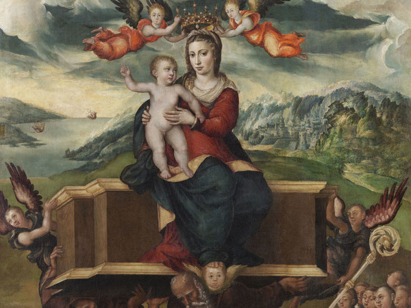

Opera del 1555, considerata il capolavoro più celebre di Sofonisba Anguissola.
XVI secolo
Sofonisba Anguissola nacque a Cremona intorno al 1532 e morì a Palermo nel 1625; alcune fonti più recenti e alcuni studi d’archivio indicano invece il 1629. Fu una delle più importanti pittrici del tardo Rinascimento e tra le prime donne a raggiungere fama europea come ritrattista. Si formò a Cremona presso Bernardino Campi e Bernardino Gatti. Dal 1559 al 1573 visse a Madrid alla corte di Filippo II di Spagna come dama di corte e maestra di pittura della regina Isabella di Valois. In seguito soggiornò tra Paternò, Palermo e soprattutto Genova, dove rimase per molti anni, prima di tornare nuovamente a Palermo. Vasari la ricordò nelle sue Vite; fu ammirata da Michelangelo e, in età avanzata, anche da Antoon van Dyck, che la visitò a Palermo. La sua opera più celebre è Le tre sorelle che giocano a scacchi del 1555.
Questa pagina raccoglie alcune immagini significative dell’opera di Sofonisba Anguissola e un collegamento alla videopresentazione.
Apri la videopresentazione su Canva
Una piccola selezione di immagini utili per conoscere la sua pittura.


